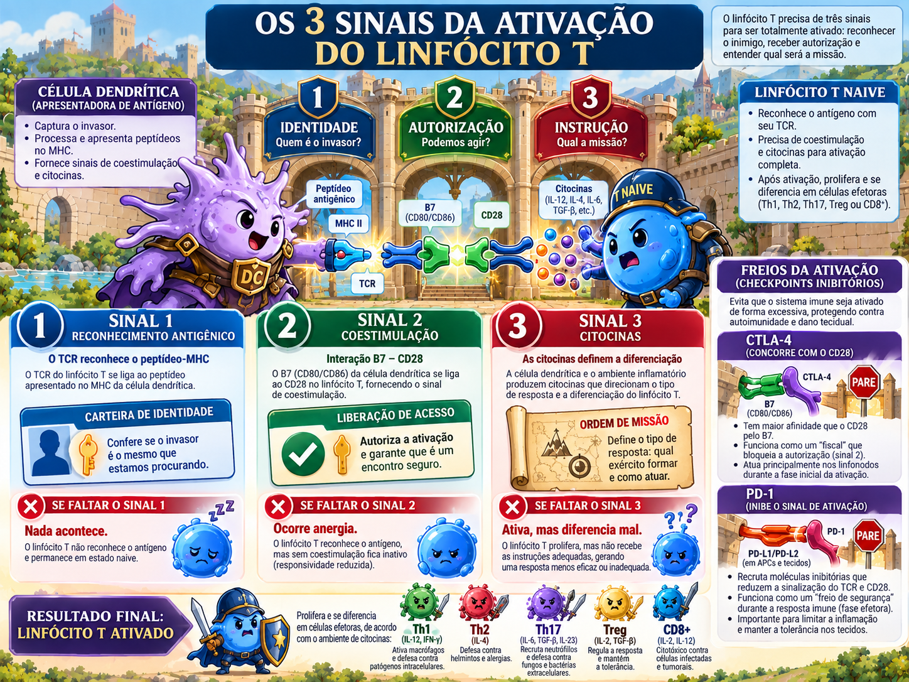

Linfócitos T
Do TCR ao timo, da coestimulação aos subtipos efetores: o “maestro” da resposta adaptativa.

TCR e CD3: quem vê não é quem transmite
O TCR αβ reconhece o complexo peptídeo–MHC, mas suas caudas citoplasmáticas são curtas. A transdução vem do complexo CD3 e cadeia ζ, rico em ITAMs. CD4/CD8 estabilizam a interação e trazem Lck.
TCR
Reconhecimento específico.
CD3/ζ
Transdução do sinal via ITAMs.
CD4/CD8
Correceptores que ligam MHC II/I e recrutam Lck.
Seleção tímica: construir um repertório útil e seguro
sem CD4/CD8
RAG1/2 + TdT
CD4+ CD8+
reconhece MHC próprio fraco → sobrevive
reage forte ao próprio → morre/Treg
Os três sinais: identidade, autorização e missão
Sinal 1
TCR reconhece peptídeo-MHC.
Sinal 2
B7-1/B7-2 da APC ligam CD28 do T.
Sinal 3
Citocinas do ambiente definem diferenciação efetora.
CTLA-4 e PD-1: dois freios, dois momentos
| CTLA-4 | PD-1 | |
|---|---|---|
| Ligante | B7-1/B7-2 | PD-L1/PD-L2 |
| Como freia | Compete com CD28 e remove B7. | Recruta fosfatases e reduz sinalização. |
| Onde predomina | Iniciação no órgão linfoide. | Fase efetora no tecido. |
IL-2 e CD25: a célula manda em si mesma
Após ativação, a célula T produz IL-2 e aumenta CD25, cadeia α do receptor de IL-2. A alça autócrina favorece expansão do clone que realmente reconheceu o antígeno.
Subpopulações CD4: escolha a equipe pelo tipo de ameaça
| Subtipo | Indução / fator | Produz | Missão |
|---|---|---|---|
| Th1 | IL-12/IFN-γ • T-bet | IFN-γ | Intracelulares; ativa macrófago. |
| Th2 | IL-4 • GATA-3 | IL-4, IL-5, IL-13 | Helmintos, eosinófilos, alergia. |
| Th17 | TGF-β + IL-6/IL-23 • RORγt | IL-17, IL-22 | Neutrófilos; bactérias/fungos extracelulares. |
| Tfh | ICOS/Bcl-6 | IL-21, CD40L | Centro germinativo e B. |
| Treg | TGF-β + IL-2 • FOXP3 | IL-10, TGF-β | Supressão/tolerância. |
Funções efetoras: matar a célula ou consertar o macrófago?
CTL / CD8
Perforina/granzimas e via Fas–FasL induzem apoptose da célula-alvo. Útil quando o patógeno está no citosol.
Th1 / CD4
IFN-γ + CD40L ativam macrófago que já engoliu o microrganismo. Útil quando o agente vive dentro de vesículas do fagócito.
Contração e memória
Quando o antígeno desaparece, cai IL-2 e coestimulação; a maioria das efetoras morre por apoptose. Uma fração persiste como memória central, efetora ou residente em tecido, com respostas secundárias mais rápidas e eficientes.
Reconhecimento sem autorização
Um T naive reconhece seu peptídeo em MHC, mas a APC não expressa B7 suficiente. Qual desfecho é mais clássico?